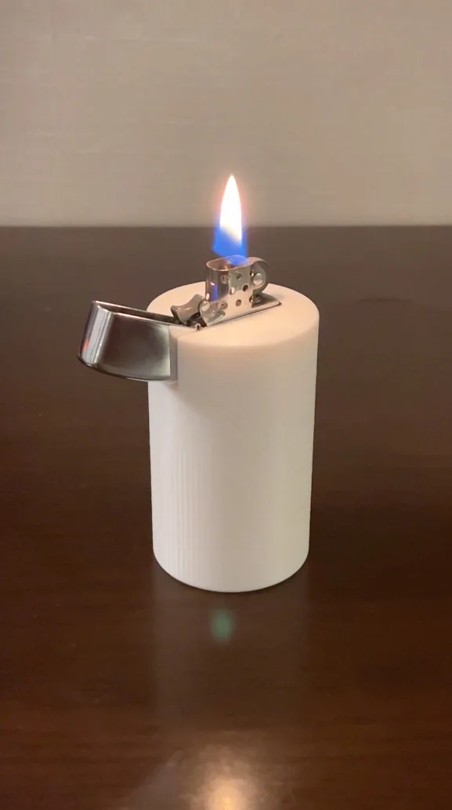
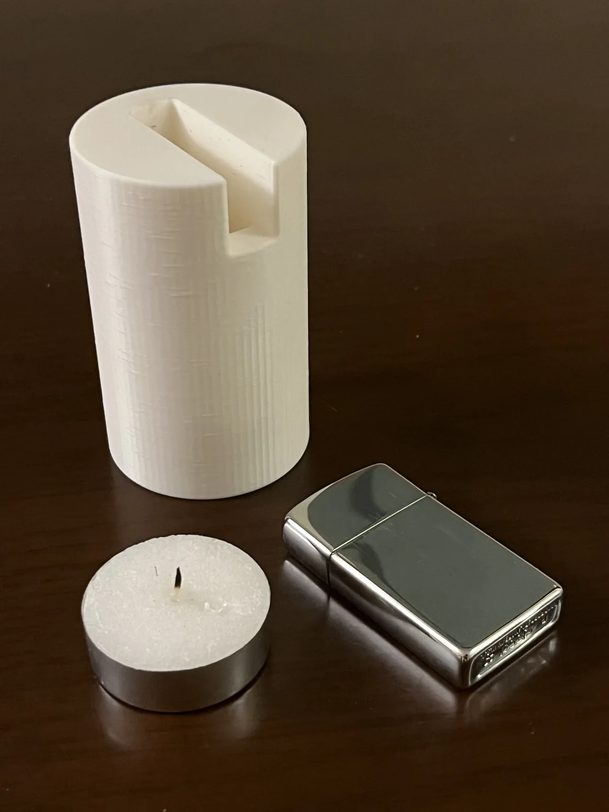

Ramsol's Repository
Zippo Candle
The smell of Zippo fluid always takes me back to the kerosene heater I used as a kid. Flip it over and it works just like a regular tealight. Download STL file:
https://cults3d.com/en/3d-model/home/zippo-candle
https://makerworld.com/en/@wooramsol/upload

